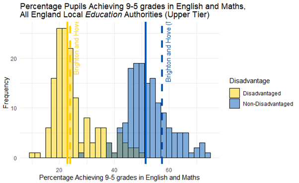
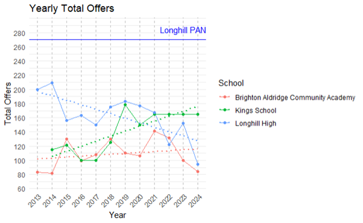

Brighton and Hove Secondary School Admissions - Fact-sheet
Fact 1 - Disadvantaged Attainment
In 2024, all students in Brighton and Hove - both disadvantaged and non-disadvantaged - achieved ABOVE the national (median) average when compared to other Local Authorities (both Upper and Lower Tier) in England. There is an attainment gap between disadvantaged and non-disadvantaged pupils in every Local Authority in England. Brighton’s is an artefact of non-disadvantaged students doing far better than average.

Fact 2 - School Demand
Demand for schools varies significantly across the city. At the lower end, in the last 11-years, Longhill has received fewer total applications (1st, 2nd and 3rd choice combined) than its Published Admission Number (PAN) of 270. In-demand schools would normally expect considerably more total applications than places available as 2nd and 3rd choices are often allocated places elsewhere. For comparison, another single catchment school - Patcham High, has generally received around twice as many total applications than PAN.
Over the last 11 years (since 2013), Longhill’s total offers have trended down every year, and it has never achieved anywhere near 270 offers. It’s peak was in 2014 when it made 209 offers. Last year it made 94 offers.


Fact 3 - Geodemographic Reality
School children in Brighton and Hove are not distributed evenly across the city and not all school locations correspond to where pupils live. Both Longhill and, to a lesser extent, BACA are located away from where students current live and are likely to live in the future. Any desire to “Maintain the geographic spread of secondary schools in the city” makes no sense if that spread bears no relation to where children live.

https://adamdennett.github.io/BH_Schools_2/schools_wk3.html#a-model-of-brightopia
Fact 4 - Demographic Decline and PAN reductions
Brighton and Hove’s student population will decline over the next decade. It is unlikely that this decline will be even across the city. Current proposed PAN reductions for schools in the city are not equitable as they ignore likely future demand, even as total populations of students decline.

Fact 5 - School Size
11-16 state-run schools exist and thrive in England and Wales with PANs smaller than 180. One already exists in Brighton. A school with a PAN of 150 would still exist near the centre of the national school size distribution for 11-16 secondary schools.

https://adamdennett.github.io/BH_Schools_2/schools_wk2.html#pan-2026-scenario-3---the-kings-scenario
Fact 6 - Travel distance to school
Most pupils in towns and cities the UK and Europe don’t travel very far to secondary school (<3km). Some children in Brighton and Hove, under current catchment arrangements (particularly those who live in Whitehawk) do have to travel far (>5km) and have no option to walk to school. Most children from Whitehawk currently have to attend Longhill, which is a bus journey away.
Under Option B, significant numbers of children (estimates of up to 365 a day) from central Brighton would be forced to to travel 4-5 miles (6-8km) to attend school at Longhill - a distance more common in sparse rural areas. This would be an unusually long distance and a journey which currently takes 1 to 1.5hrs on public transport, each way; so 2-3hrs a day of travelling if public transport were used.
In a world recognising the benefits of the ‘15-minute city’ - https://www.moreno-web.net/new-book-the-15-minute-city-a-solution-to-saving-our-time-and-our-planet/ - forcing more long-distance travel would be a regressive policy. The Brighton and Hove School Model of Travel Survey found, in 2024, that 26.2% of journeys to and from secondary school were made by car. https://www.brighton-hove.gov.uk/travel-and-road-safety/travel-transport-and-road-safety/school-mode-travel-survey-2024-guidance-letter
Fact 7 - Statistical Smoothing is not ‘improvement’
Redrawing boundaries and enlarging catchments may give the illusion of ‘improvement’ in the distribution of things like Free School Meals, when really everything is just moving closer to the city average.

https://adamdennett.github.io/BH_Schools_2/schools_wk3.html#statistical-smoothing
Factsheet - Additional Info
Fact 1 - Detail
All DfE data have been re-calculated for Local Education Authority (LEA) or “Upper Tier” Local Authority boundaries. Data were re-aggregated from “Lower Tier” data produced by the DfE using ONS look-up tables - see below.
For disadvantaged student attainment in GCSE Maths and English, 24% achieved grade 9-5, ranking it 61st out of 153 Local Education Authorities (against a national median of 23%). With 27 of the top 28 being in London. Excluding London, Brighton ranks 30th best out of 122 Local Education Authorities in the rest of England for disadvantaged attainment at GCSE in 2024.
Brighton ranks 35th out of 153 Local Education Authorities for non-disadvantaged attainment with 57.5% of students achieved grade 9-5 in English and Maths GCSE (against a national median of 51.5%. Excluding London Boroughs (as Brighton already exceeds the performance of 10 boroughs) Brighton and Hove would rank 12th best out of the remaining 122 Local Education Authorities in the rest of England.
The relatively large size of the attainment gap in Brighton and Hove is due more to the higher levels of achievement of its non-disadvantaged students.
The Education Policy Institute - the leading research organisation in the UK in this area - using a more sophisticated measurement of gap (incorporating longitudinal disadvantage and ranking to reduce the biasing effects of London) - https://epi.org.uk/annual-report-2024-local-authority-gaps-2/ - shows that Brighton is one of the few local authorities in the UK to reduce its gap in educational attainment since 2019.
Source - Department for Education - https://explore-education-statistics.service.gov.uk/find-statistics/key-stage-4-performance - table 2233_sl_lad_fsm_dis_data_revised.csv and https://geoportal.statistics.gov.uk/datasets/ec2949b8c037460bbc2891323927e931_0/explore